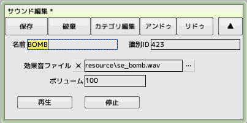
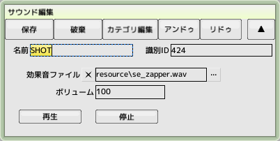
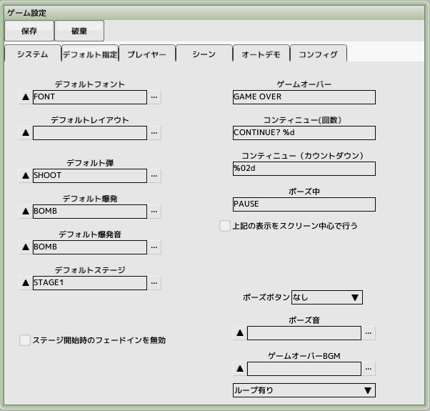
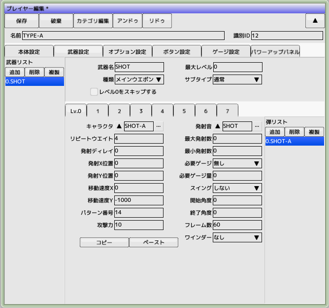
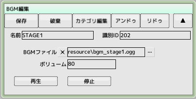
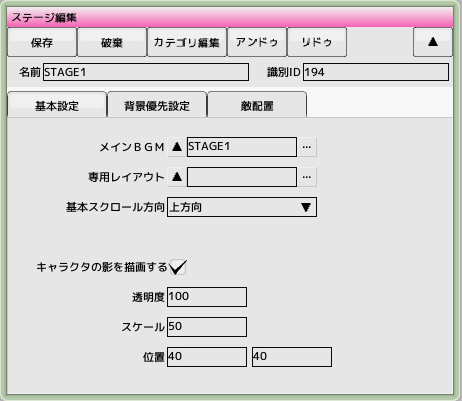

■元のページへ戻る
■元のページへ戻る
15.サウンドを設定する
効果音とＢＧＭを作成してゲーム内に組み込みます


プロジェクトからサウンドを新規作成します
爆発音用の'BOMB'と自機のショット音用に'SHOT'を作成し
チュートリアルフォルダの'resource/se_bomb.wav'と'resource/se_zapper.wav'を登録します

ゲーム設定のデフォルト指定タブのデフォルト爆発音へ'BOMB'を登録します

プレイヤーのショット発射時の効果音を設定します

プロジェクトからＢＧＭを新規作成します
ステージ１のＢＧＭとして再生するために'STAGE1'を作成します
チュートリアルフォルダの'resource/bgm_stage1.ogg'を登録します

以前に作成したステージ'STAGE1'を開きます
メインＢＧＭの項目を設定します
ステージ開始時に自動でＢＧＭの再生が始まります
 効果音の再生やメインＢＧＭの変更はスクリプトからも可能です
効果音の再生やメインＢＧＭの変更はスクリプトからも可能です
■ページ上部へ戻る